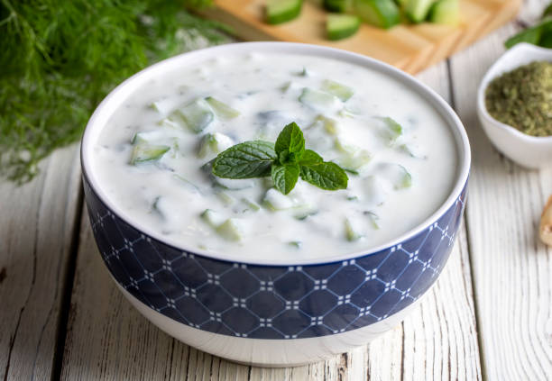

Home
Tzatziki

Tzatziki is a deliciously creamy cucumber dip or side dish that's easy to make at home. This is the best tzatziki recipe I know, and it only gets better with time. Serve with pita bread, in gyros, on grilled lamb, or whatever you like!
- 1 (32 ounce) container plain low-fat yogurt
- ½ English cucumber with peel, grated
- 2 tablespoons fresh lemon juice
- 2 tablespoons extra-virgin olive oil
- 1 clove garlic, pressed
- 3 tablespoons chopped fresh dill
- 1 tablespoon salt, or to taste
- 1 tablespoon freshly ground black pepper, or to taste
- 2 teaspoons grated lemon zest
Steps to make it
- Gather all ingredients.
- Combine yogurt, grated cucumber, lemon juice, olive oil, and garlic together in a large bowl.
- Add dill, salt, pepper, and lemon zest; mix until smooth.
- Pour into a serving dish. Garnish with fresh dill.